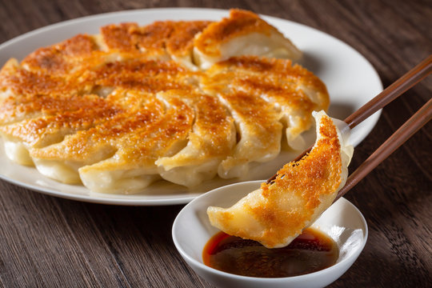

Gyoza recipe

Pan-fried Japanese dumpling filled with a wonderful mixture of minced beef and pork and veges.
Perfect recipe for making skins from scrach if you like it.
Ingredients
Servings:24
For skins
- 200g All purpose flour, sieved
- 100ml Hot boilied water
For filling
- 150g Minced beef and pork
- 150g Chinese cabegge, chopped and well drained
- 30g Chives, chopped
- 1 piece of garlic, chopped
- 1 piece of ginger, chopped
Seasonings
- 30g Chiken stock powder
- 15g Soy source
- 10g Sesami oil
- 15g Cooking sake
Steps
For skins
- Put flour in a bowl and add boilied water little by little as string flour with chopsticks.
- Knead the dough until it comes together.
- Place the dough in the fridge for 1 hour.
- Tear off as much dough as needed to roll out with a stick to form 10cm diameter skins.
For gyoza
- Knead minced beef and pork with all seadonings.
- Add chopped Chinese cabagge and chopped chives to the meat and lightly mix them.
- Wrap filling with skins.
- Pan fry gyoza with some sesami oil.